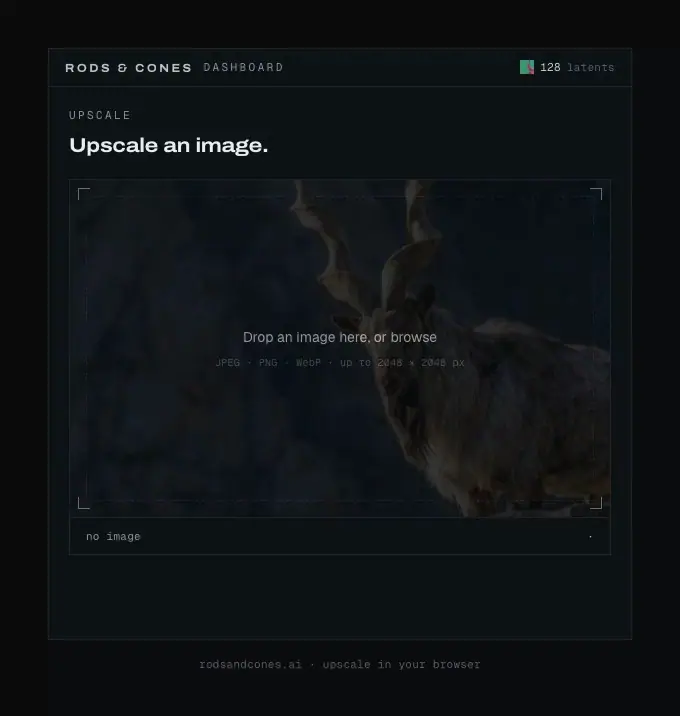

Things I've built
Some things in machine learning I've built. These are interactive, poke at them.
Prompt Injection Gauntlet
A mini prompt injection guardrail gauntlet that runs inside your browser. Try malicious prompts to get an LLM to do something evil and see if you can get past the guardrail.
Tiny model · runs in browserWhat Should I Watch?
A graph neural network over 4,331 films and their crew, trained to predict who worked on what. No training labels of similarity, the graph structure is what makes the recommendations possible. Try it! pick a film and it shows its nearest neighbours, along with the actual crew connections that produced the answer.
64-dim embeddings · int8 · no serverRods & Cones
Diffusion-based image upscaling. The project is an AI SaaS intended as a B2C product. Users can login and upscale their images or use the REST API. Also offers control over the speed vs. quality tradeoff.
4× upscale · diffusion model
Fast Super-Resolution GAN
A single-image super-resolution framework that upsamples videos 4× in real time on a GPU. Play around with the slider.
4× upscale · real-time